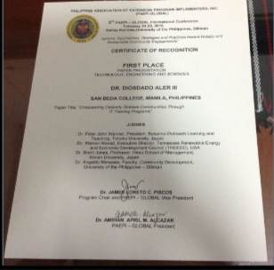
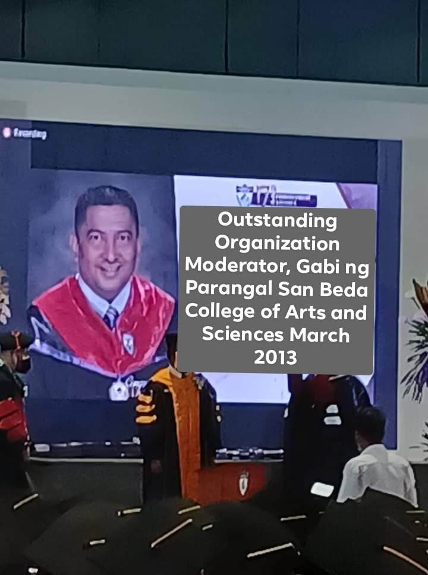
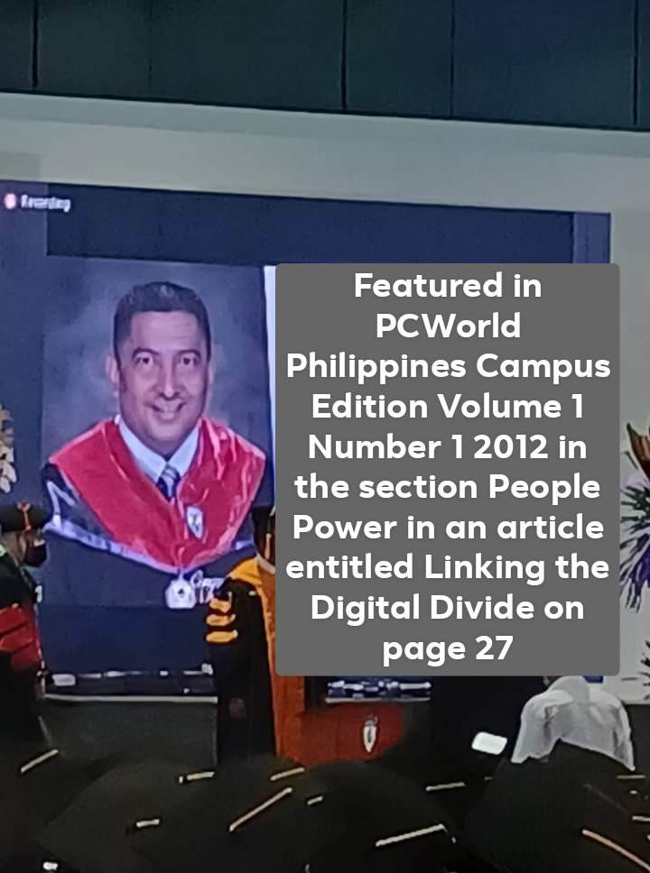
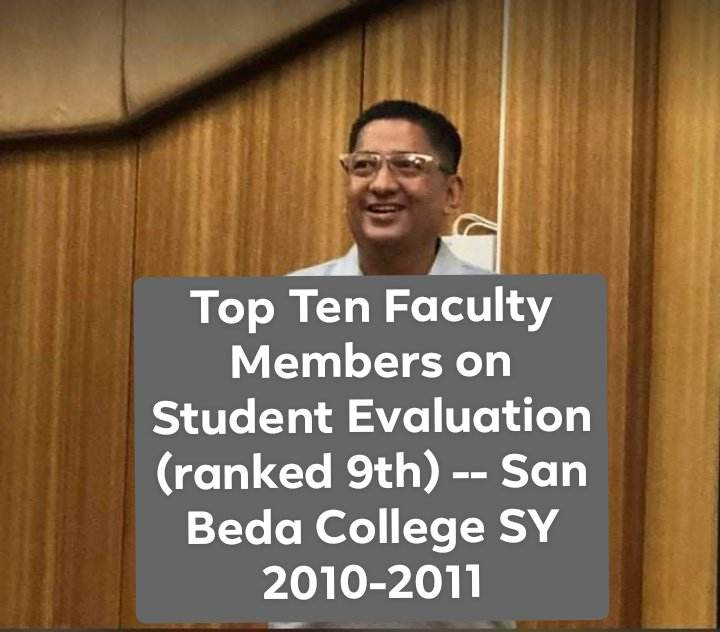
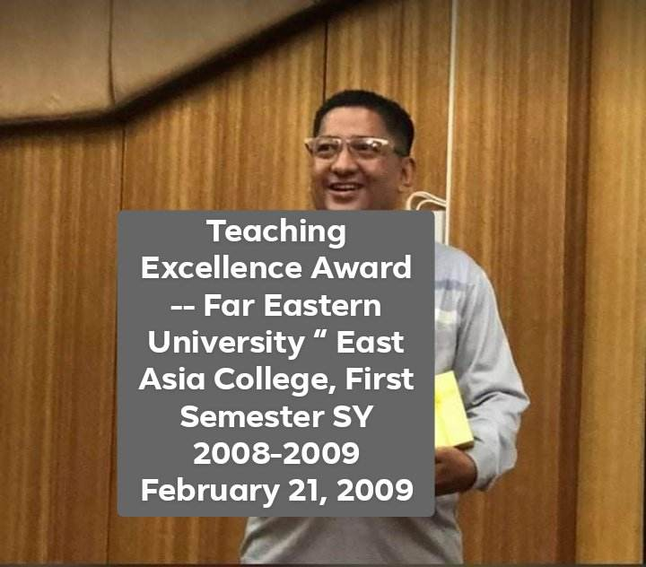
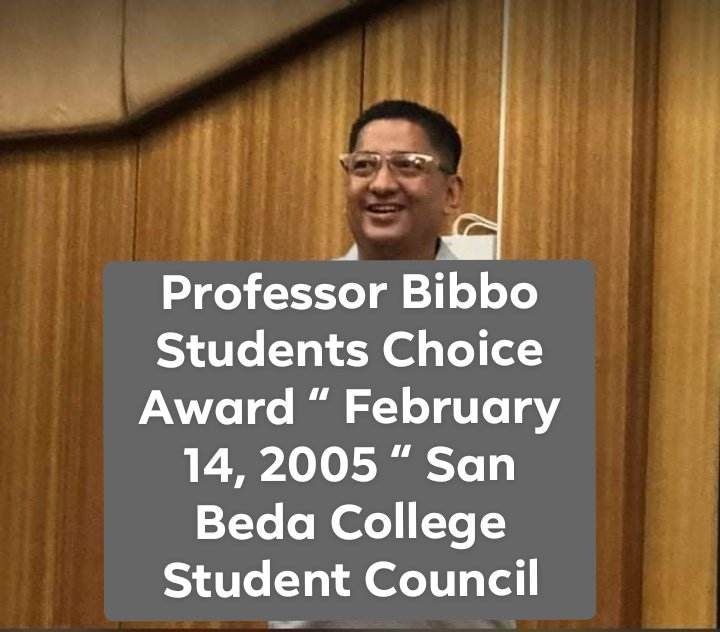
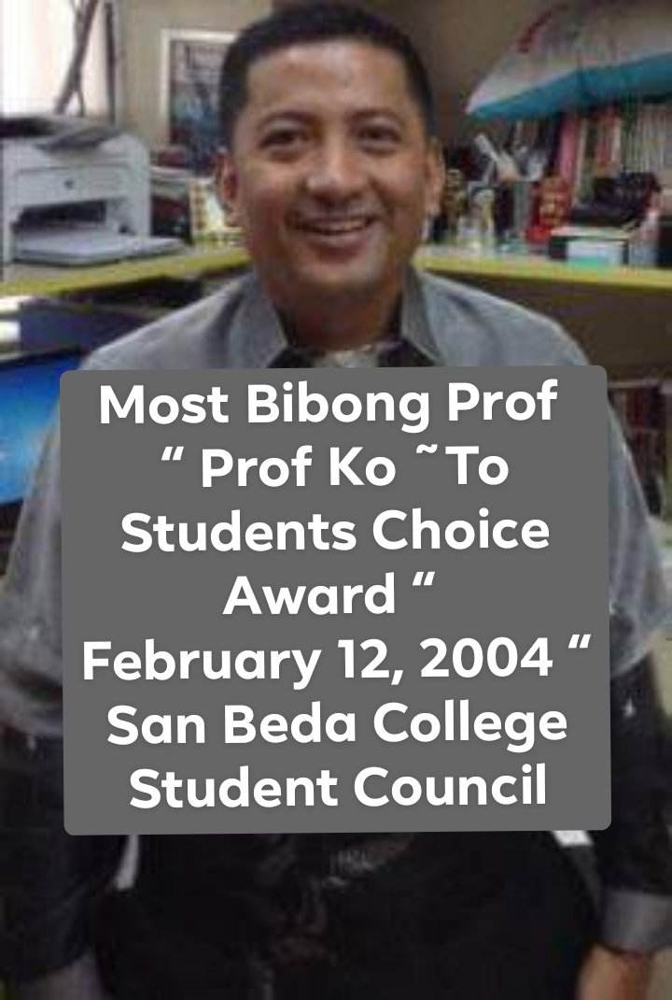
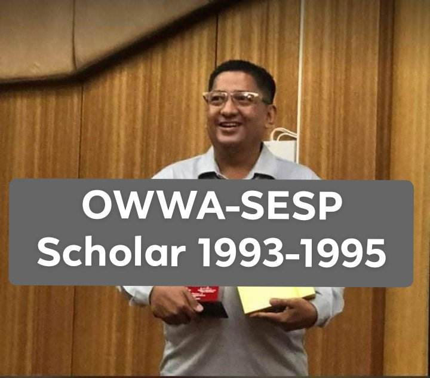
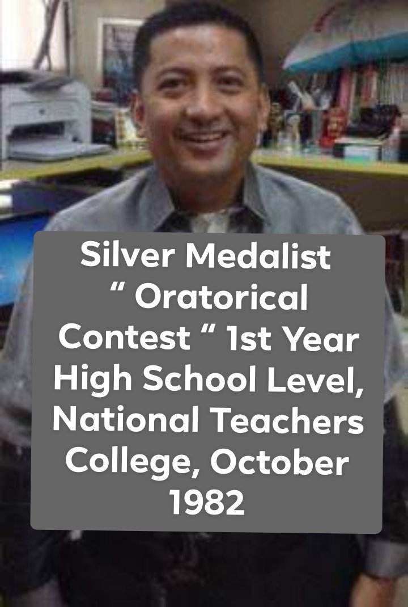
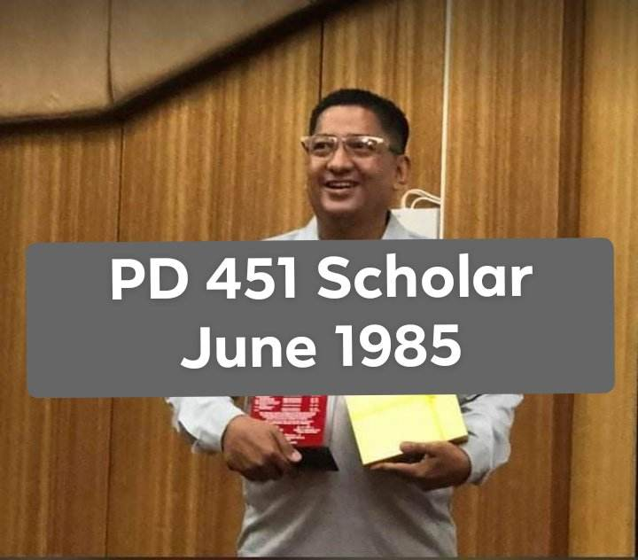

First Place - Paper Presentation (Technology, Engineering and Sciences Category , 3rd International and Annual Convention – Philippine Association of Extension Program Implementers (PAEPI-Global), Bahay Kalinaw University of the Philippines Diliman, Quezon City,
February 22-23, 2016

Outstanding Organization Moderator, Gabi ng Parangal San Beda College of Arts and Sciences March 2013

Featured in PCWorld Philippines Campus Edition Volume 1 Number 1 2012 in the section “People Power “in an article entitled “Linking the Digital Divide†on page 27

Top Ten Faculty Members on Student Evaluation (ranked 9th) -- San Beda College SY 2010-2011

Teaching Excellence Award -- Far Eastern University – East Asia College, First Semester SY 2008-2009 February 21, 2009

Professor Bibbo Students" Choice Award “ February 14, 2005 “ San Beda College Student Council

Most Bibong Prof “ Prof KoTo Students™ Choice Award “ February 12, 2004 “ San Beda College Student Council

OWWA-SESP Scholar 1993-1995

Silver Medalist “ Oratorical Contest “ 1st Year High School Level, National Teachers College, October 1982

PD 451 Scholar June 1985
